- 2장
- <p>,<br> : 단락바꾸기, 줄바꾸기
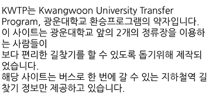 - <strong> : 텍스트 강조
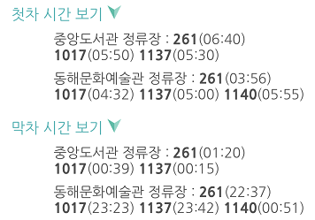 - <link> : 여러 페이지에 나눔고딕체 적용
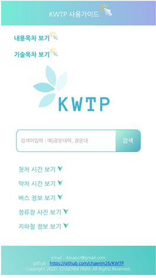 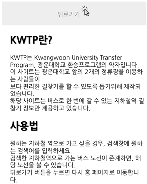 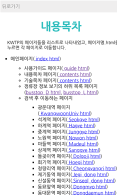 - <img> : 이미지 삽입하기
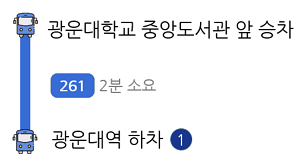 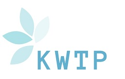 - <ul>, <li> : 리스트 나타내기
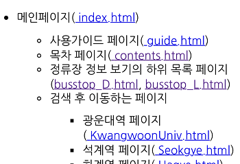 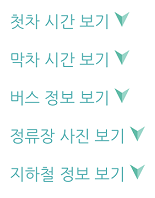 - <a> : 하이퍼링크 삽입
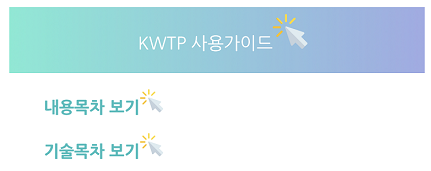
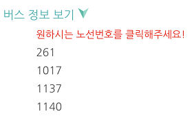 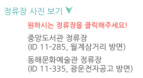 - <h1>, <h2> : 제목작성
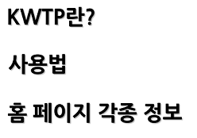 - 3장
- <header> : 상단바작성
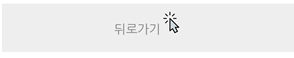
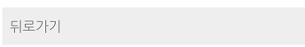 - <nav> : 목차작성
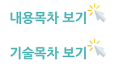 - <section> : 각 장 작성
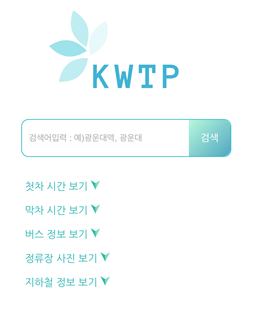 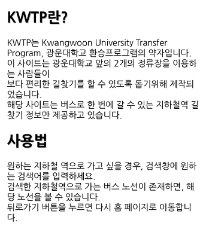
- <footer> : 하단부분작성
- <details>, <summary> : 목록 펼치고접기
옆의 화살표 아이콘을 클릭하면 목록을 펼치고 접을 수 있습니다.
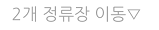 - <form>,<input>,<button> : 입력폼,검색버튼,placeholder

- <button> : 검색,홈으로가기,뒤로가기
- 4장
- 색표현 : color,background-color
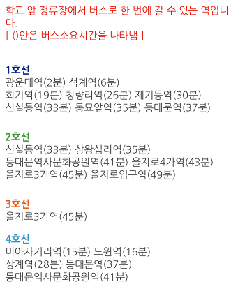 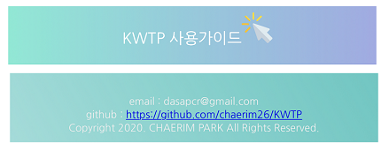 - 텍스트 꾸미기 속성 : text-align,text-shadow
- 폰트 제어 속성 : font-size,font-family,
박스모델 속성 : width,height,padding,margin,border
전체적인 페이지에 모두 적용
- 5장
- 6장
- <script> 태그로 자바스크립트 코드 작성,
변수, switch문, break문, 함수
검색창에 검색어를 입력하고 검색하면 검색어에 따라서 페이지 이동!
- HTML 태그의 이벤트 리스너 속성에 자바스크립트 코드 작성
해당 버튼을 누르면 동적 동작이 가능
- 확인 다이얼로그 : alert
검색을 진행하면 검색어에 따라 뜨는 창
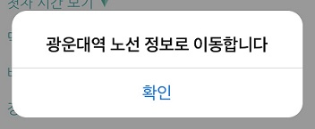 - 8장
- DOM객체 : document.getElementById 사용
검색어에 따라 페이지 이동!